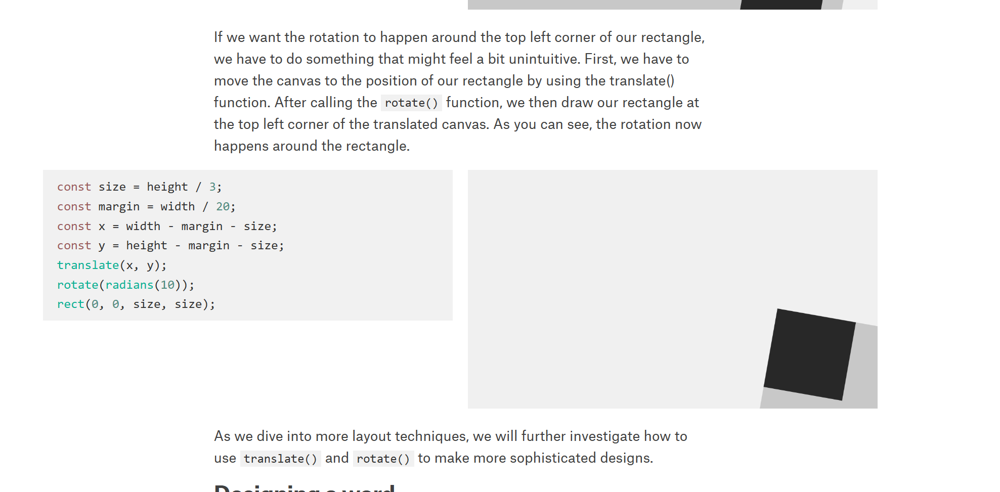
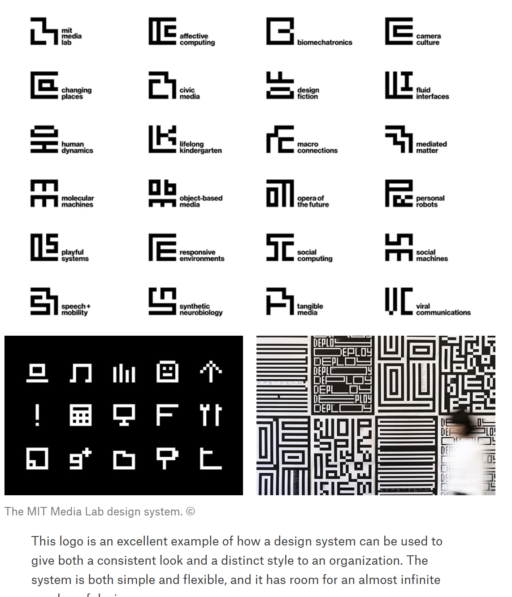

What do Prototypes Prototype?
“Current terminology for describing prototypes centers on attributes of prototypes themselves, such as what tool was used to create them, and how refined-looking or -behaving they are. Such terms can be distracting. Tools can be used in many different ways, and detail is not a sure indicator of completeness”
As someone who is new to Figma, I resonated a lot with this quote. While Figma is amazing (it somehow never occured to me it would be so simple to block out a website) I found it incredibly redundant to create interactions in Figma, the process being complicated, and ultimately not very useful to the final execution of such a product.
I found it pretty distracting having to get it to be super refined, when I don't think it's an essential part of my prototype, and whatever detail I didn't get perfect shoudn't be a big deal and it felt like a waste of effort.
What do Prototypes Prototype?
“The evolving design was too fuzzy—existing mainly as a shared concept in the minds of the designers. There were also too many open and interdependent questions in every design dimension: role, look and feel, implementation.”
I like how this quote highlights the complexity of a prototype and how a single prototype wouldn't be enough to answer all questions, and designers tend to all have different ways of thinking or executing how they think a product should work.
What do Prototypes Prototype?
“What role will it play in a users life? How should it look and feel? How should it be implemented?”
I will keep these three principles in mind when designing my prototypes in the future!
Programming Design Systems
“The ability to procedurally generate designs is one of the most empowering aspects of algorithmic design, whether it leads to generating 45,000 variations of a logo, building an infinite galaxy of planets with generative landscapes, or creating a dynamic article that changes its content based on map selections.”
I thought this quote was a neat way to capture the generative potential of digital design and how it too can be a delightful process for designers.
Programming Design Systems
I thought this had a unique, yet simple design I had never thought of. I'm not familiar with the principles of graphics design but I find it quite cute and delightful.
Programming Design Systems
MIT's design language was something I didn't know about- its very unique and I'm surprised at how consistent and applicable it was used across all usecases.